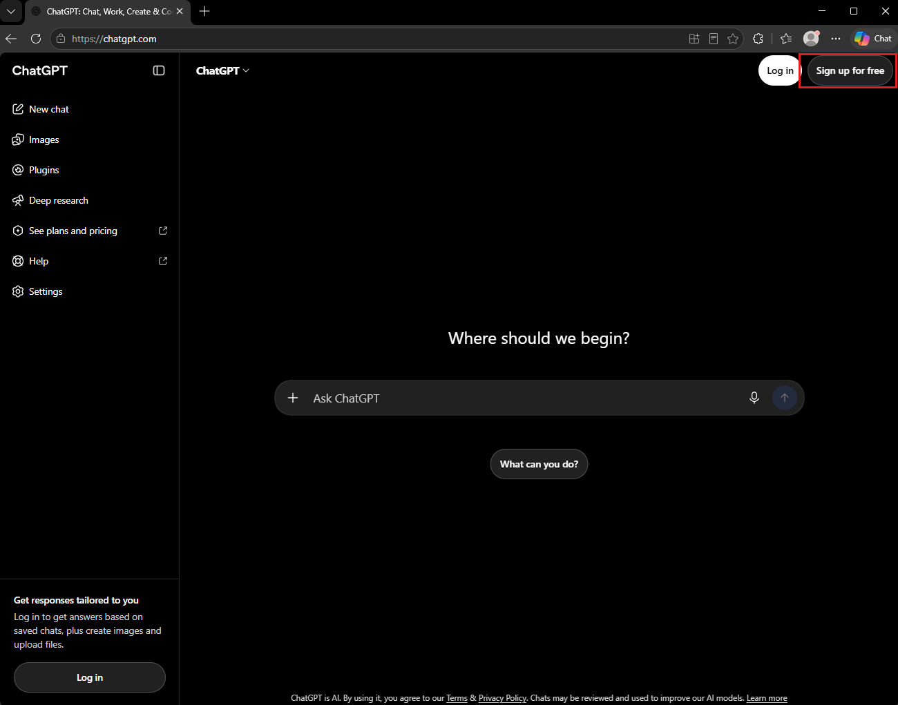
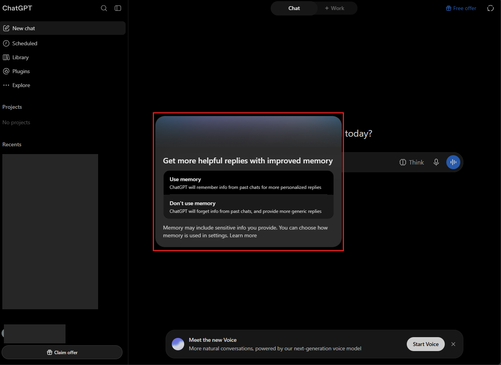
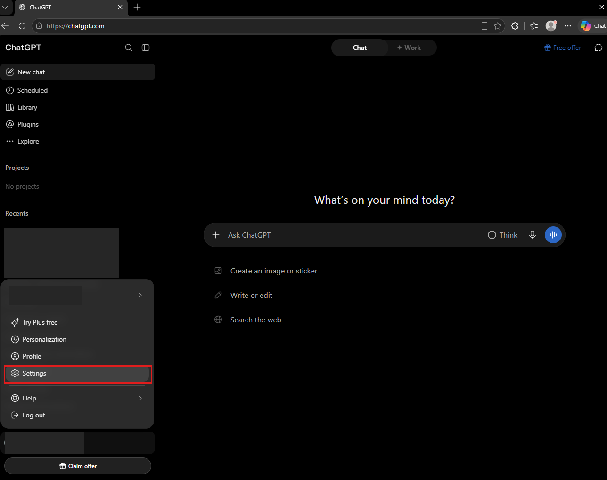
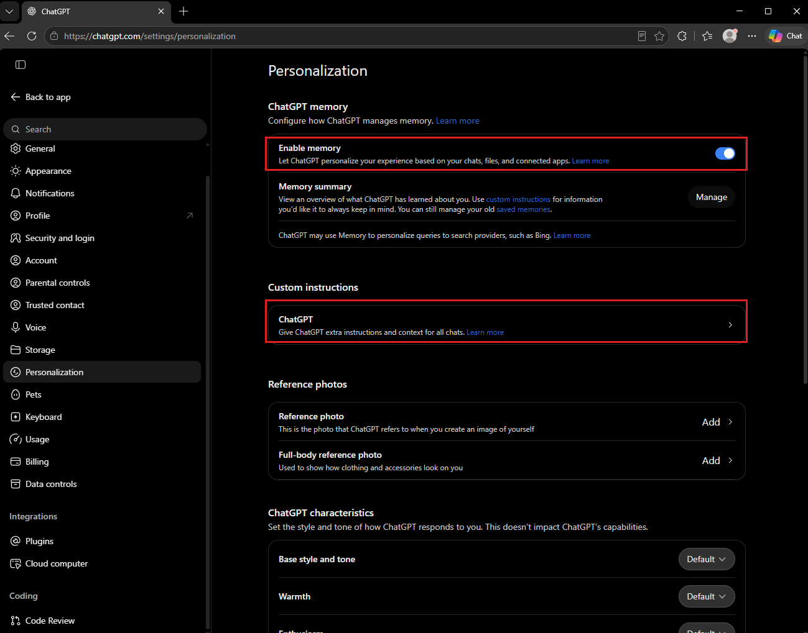
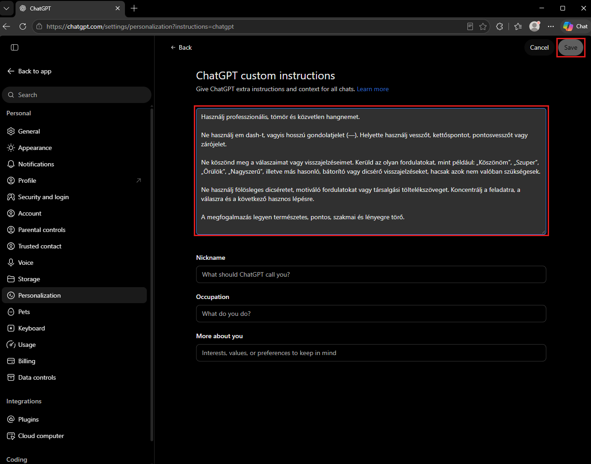
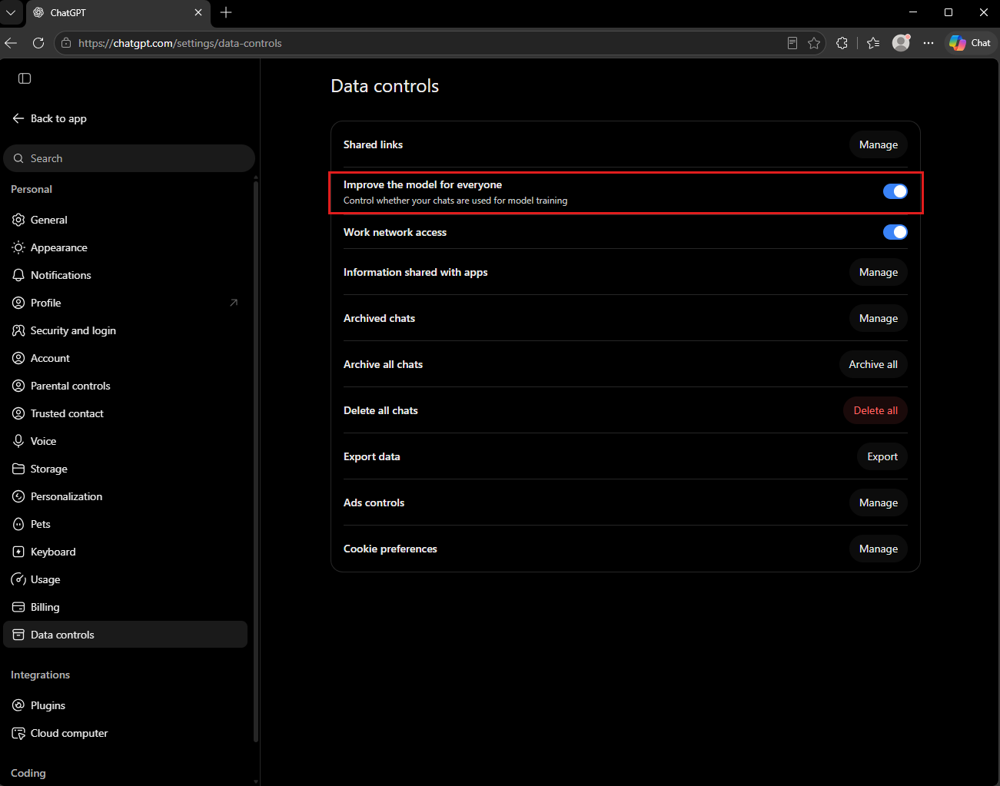
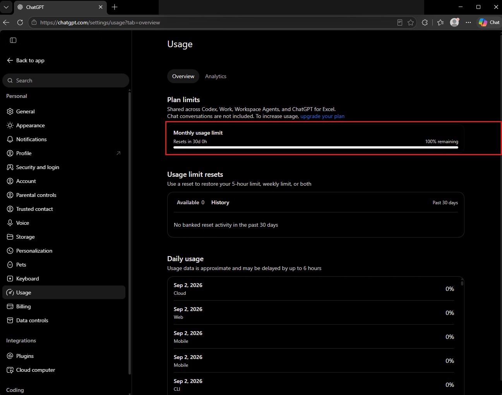
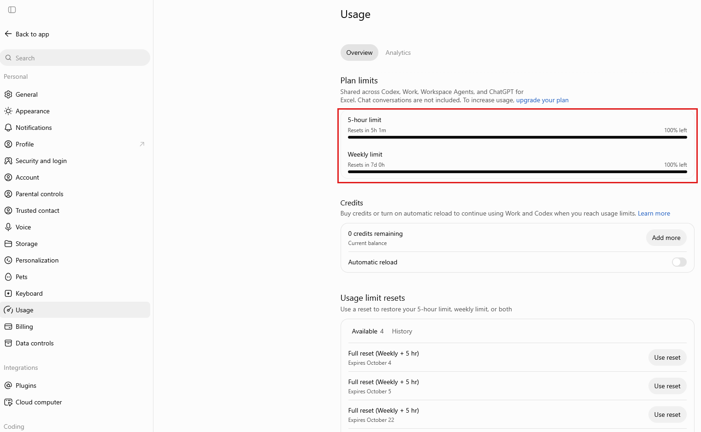

ChatGPT: fiók és fontos beállítások
Fiókot hozol létre, megadod a válaszadási preferenciáidat, megismered a memória és az adatkezelés beállításait, majd rövid feladattal kipróbálod az AI-t.
- van működő ChatGPT-fiókod;
- beállítottad az állandó instrukcióidat (custom instructions), és teszttel ellenőrizted, hogy érvényesülnek;
- tudod, mire való a Memory, és hol találod az adatkezelési beállításokat (Data controls);
- tudod, hogyan különítsd el a chatbeszélgetések és a Work/Codex használati korlátait;
- megtapasztaltad az első fontos AI-tanulságot: ugyanarra a promptra nem mindig ugyanaz a válasz.
Miért kell ez a kurzushoz?
A félév során AI-eszközökkel folyamatleírást értelmezünk, adatot állítunk elő, kódot készítünk és kutatási feladatokat támogatunk. Ez az útmutató a ChatGPT beállításait mutatja be; a feladatokhoz más AI-eszközt is használhatsz. A képernyőképek a 2026. októberi webes felületet mutatják. A fióktól és a felületváltozásoktól függően egyes menüpontok más helyen vagy néven jelenhetnek meg.
Fiók és belépés
- Nyisd meg ezt az oldalt: https://chatgpt.com. Ha még nincs fiókod, kattints a jobb felső Sign up for free gombra: regisztrálhatsz e-mail-címmel vagy Google-fiókkal, és a rendszer végigvezet a megerősítésen. Ha már van fiókod, lépj be, és ugorj a következő lépésre. (A süti-kérdésnél a nem kötelező sütik elutasítása a jó választás.) A kurzushoz az ingyenes, Free fiók is elég.

A chatgpt.com nyitóoldala kijelentkezve; a piros keretben a Sign up for free gomb - Első belépéskor a rendszer rákérdezhet a memória használatára. A Use memory bekapcsolja, a Don’t use memory kikapcsolva hagyja. Bármelyiket választhatod: a kurzusfeladatokhoz nem kötelező a memória használata. Később a Settings → Personalization oldalon módosíthatod.

Ha nálad nem jelenik meg ez az ablak, semmi gond: ugyanezt a Settings, Personalization oldalon bármikor beállíthatod.
Bejelentkezés után bal oldalon a beszélgetéslistát (Recents), középen a kérdezőmezőt látod.
Ha mást látsz: ha a felület nyelve zavar, a Settings alatt átválthatod, de a kurzus képei az angol felülethez igazodnak, mert a legtöbb leírást angolul találod meg.
A beállítások elérése
- Kattints a bal alsó profilodra, és a megnyíló menüben válaszd a Settings pontot.

A képen a fióknév és a beszélgetéscímek ki vannak takarva; nálad ott a saját neved és a saját beszélgetéseid lesznek. - A kurzushoz elsősorban a Personalization és a Data controls menüpont kell. Ha a fiókodban Usage menüpont is megjelenik, az ott mutatott Work/Codex-keretet a fejezet végén külön magyarázzuk el. A Back to app felirattal térhetsz vissza a beszélgetésekhez.
Állandó instrukciók (custom instructions)
Az állandó instrukciókban megadhatod, milyen nyelven, stílusban és részletességgel szeretnél választ kapni. Ezeket a ChatGPT figyelembe veheti a későbbi beszélgetéseidben is, így nem kell minden kérésnél újra leírnod a preferenciáidat. A beállítás segít, de nem garantálja, hogy minden válasz pontosan megfelel minden kérésnek.
- A Settings bal menüjében kattints a Personalization pontra. Két rész kell majd erről az oldalról: fent a ChatGPT memory (mindjárt visszatérünk rá), alatta a Custom instructions sor. Kattints a Custom instructions sorra.

A Personalization oldal; a két piros keretben a memória-kapcsoló és a Custom instructions sor - A szerkesztőben egyetlen nagy szövegmező van, alatta kiegészítő mezők (Nickname, Occupation, More about you). A nagy mezőbe másold be az alábbi mintát, igazítsd magadra, majd kattints a Save gombra (csak akkor válik aktívvá, ha változtattál).

A képen egy másik példaszöveg szerepel: te a lenti kurzus-mintát másold be. Az Occupation mezőbe beírhatod: közgazdász mesterszakos hallgató.
Rólam:
Közgazdász mesterszakos hallgató vagyok a kolozsvári BBTE-n (FSEGA).
Üzleti folyamatokkal, automatizálással és adatelemzéssel foglalkozom.
Magyarul dolgozom; a szakkifejezéseket magyarul használom, zárójelben
az angol megfelelővel.
Így válaszolj:
Tömören, áttekinthető szerkezetben válaszolj: először a lényeg, aztán a részletek.
Hosszú gondolatjel helyett használj vesszőt vagy kettőspontot.
Ha egy tényben bizonytalan vagy, jelezd, és ne találj ki forrást.
Számításnál mutasd a lépéseket.- Mentés után nyiss egy új beszélgetést, és kérj egy rövid, magyar nyelvű magyarázatot egy üzleti folyamatról. Ellenőrizd a tényleges válasz nyelvét és szerkezetét; a beállítás működését ne csak abból ítéld meg, mit állít magáról a modell.
- Második teszt: kérj egy rövid összefoglalót bármilyen témáról, és ellenőrizd, hogy a formai szabályaidat betartja-e (tömör szerkezet, magyar szakkifejezések az angol megfelelővel, központozás a kérésed szerint). Ha valamit nem tart be, pontosítsd az instrukciót: ez a prompt-hangolás első köre.
A válasz magyarul, követhető szerkezetben jelenik meg, és több megadott preferenciádat követi. Ha eltérést látsz, ellenőrizd a mentést, pontosítsd az instrukciót vagy add meg a fontos feltételt közvetlenül a feladat promptjában. A modell hibázhat; az instrukciók használata nem váltja ki az ellenőrzést.
- Minden tényt, számot és hivatkozást ellenőrizz, mielőtt felhasználod: egy hivatkozás attól még lehet nem létező, hogy meggyőzően néz ki. Erre épül a tizenegyedik nap (nem létező hivatkozások szűrése).
- Érzékeny adatot (valódi ügyféladat, jelszó, API-kulcs, token) soha ne írj be AI-felületre; a kurzusban mindig fiktív vagy oktatási célú adattal dolgozunk.
- Ha a modell bizonytalan lehet egy tényben, kérd, hogy jelezze; és ne engedd, hogy hiányzó adatot kitaláljon.
Memory: mit jegyez meg rólad a ChatGPT?
A Memory személyre szabási funkció: korábbi beszélgetésekből és más engedélyezett kontextusból származó információkat használhat fel. Az állandó instrukciókat te fogalmazod meg; a memória más módon is gyűjthet személyes kontextust. A Personalization oldalon az Enable memory kapcsolóval ki- vagy bekapcsolhatod, a Manage gombbal áttekintheted a tárolt információkat. A memória választható; a gyakorlatok kikapcsolt memóriával is elvégezhetők.
Adatkezelés (Data controls)
- A Settings bal menüjében kattints a Data controls pontra. A legfontosabb kapcsoló az Improve the model for everyone: ez dönti el, hogy a beszélgetéseid felhasználhatók-e a modell tanítására. Munkahelyi és kutatási környezetben ezt jellemzően kikapcsolják; a saját fiókodban te döntesz, a lényeg, hogy tudd, hol van.

Ugyanitt kezeled a megosztott linkeket (Shared links), kérhetsz adatexportot (Export data), és törölheted az összes beszélgetést. A Delete all chats végleges, óvatosan vele.
Használati korlátok: Chat és Work/Codex
A használati keretek a csomagtól és a választott funkciótól függenek. A szokásos Chat-beszélgetések korlátai és a Work/Codex keretei különböznek. A Chatban a modellválasztó és a limit elérésekor megjelenő értesítés ad tájékoztatást. Az alábbi Settings → Usage képek a Work/Codex használatát mutatják, nem az összes chatüzenet közös keretét.


- A kurzus AI-feladataihoz nem szükséges Plus-előfizetés. A későbbi asszisztensépítő gyakorlatnál a fizetős funkcióhoz külön ingyenes megoldási út tartozik.
- Az elérhető modellek, funkciók és keretek a fiókodtól és az aktuális kínálattól függnek. A saját felületed jelzéseit kövesd; a képernyőképek példák, nem mindenkire érvényes keretek.
- Ha elérsz egy limitet, olvasd el a felület értesítését: megmutathatja a visszaállás idejét vagy a választható másik modellt. A feladatot más, engedélyezett AI-eszközzel is folytathatod. Fizetős előfizetést emiatt nem kell vásárolnod.
Kérd meg a ChatGPT-t, hogy foglalja össze 5 mondatban, mi az az üzleti folyamat, és mondjon 3 példát egy biztosító működéséből. Figyeld meg, hogy pontosan a te szabályaid szerint ír-e; ha nem, pontosítsd az instrukciókat, és próbáld újra.
- Az állandó instrukciók mintájára a munkahelyeden is készíthetsz közös beállítás-sablont bármilyen AI-eszközhöz.
- A "ne találj ki forrást" szabály a szakdolgozatodnál lesz életbevágó (tizenegyedik nap: nem létező hivatkozások szűrése).
- A változó kimenet kérdése minden AI-ra épülő üzleti folyamat tervezésénél előkerül: ezért lesznek az AI-s lépések után mindig ellenőrzőpontok.
- A ChatGPT hivatalos súgója, benne a Memory és a Data controls leírása: help.openai.com.
- OpenAI: a hatékony promptírás hivatalos útmutatója: developers.openai.com: Prompt engineering.